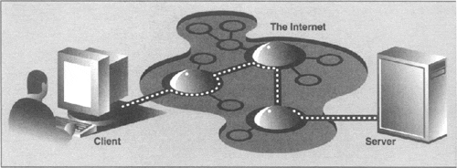
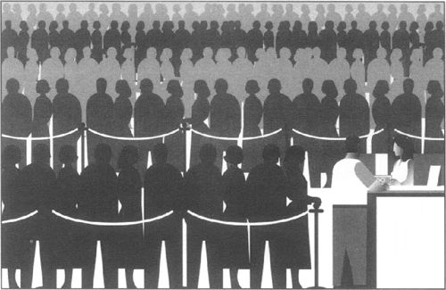

| < BACK | Make Note | Bookmark | CONTINUE > |
Introduction
What is Client-Server Architecture?
What is client-server architecture? It means different things to different people, depending on whom you ask as well as whether you are describing a software or a hardware system. In either case, the premise is simple: The server, a piece of hardware or software, is providing a "service" which is needed by one or more clients, users of the service. Its sole purpose of existence is to wait for (client) requests, service those clients, then wait for more requests.
Clients, on the other hand, contact a (predetermined) server for a particular request, send over any necessary data, and wait for the server to reply, either completing the request or indicating the cause of failure. While the server runs indefinitely processing requests, clients make a one-time request for service, receive that service, and thus conclude their transaction. A client may make additional requests at some later time, but these are considered separate transactions.
The most common notion of "client-server" today is illlustrated in Figure 16-1, a user or client computer is retrieving information from a server across the Internet. Although such a system is indeed an example of a client-server architecture, it isn't the only one. Furthermore, client-server architecture can be applied to computer hardware as well as software.
Figure 16-1. Typical Conception of a Client-Server System on the Internet.
Hardware client-server architecture
Print(er) servers are examples of hardware servers. They process incoming print jobs and send them to a printer (or some other printing device) attached to such a system. Such a computer is generally network-accessible and client machines would send print requests.
Another example of a hardware server is a file server. These are typically machines with large, generalized storage capacity which is remotely-accessible to clients. Client machines "mount" the disks from the server machine onto their local machine as if the disk itself were on the local machine. One of the most popular network operating systems which support file servers is Sun Microsystems' Network File System (NFS). If you are accessing a networked disk drive and cannot tell whether it is local or on the network, then the client-server system has done its job. The goal is for the user experience to be exactly the same as a local disk—the "abstraction" is normal disk access. It is up to the programmed "implementation" to make it behave in such a manner.
Software client-server architecture
Software servers also run on a piece of hardware but do not have dedicated peripheral devices as hardware servers do, i.e., printers, disk drives, etc. The primary services provided by software servers include program execution, data transfer retrieval, aggregation, update, or other type of programmed or data manipulation.
One of the more common software servers today is the Web server. A corporate machine is set up with Web pages and/or Web applications, then the Web server is started. The job of such a server is to accept client requests, send back Web pages to (Web) clients, i.e., browsers on users' computers, and wait for the next client request. These servers are started with the expectation of "running forever," although they do not achieve that goal, they go for as long as possible unless stopped by some external force, i.e., explicitly shut down or catastrophically due to hardware failure.
Database servers are another kind of software server. They take client requests for either storage or retrieval, perform that service, then wait for more business. They are also designed to run "forever."
The last type of software server we will discuss are windows servers. These servers can almost be considered hardware servers. They run on a machine with an attached display, such as a monitor of some sort. Windows clients are actually programs which require a windowing environment with which to execute. These are generally considered graphical user interface (GUI) applications. If they are executed without a window server, i.e., in a text-based environment such as a DOS window or a Unix shell, they are unable to start. Once a windows server is accessible, then things are fine.
Such an environment becomes even more interesting when networking comes into play. The usual display for a windows client is the server on the local machine, but it is possible in some networked windowing environments, such as the X Windows system, to choose another machine's window server as a display. In such situations, you can be running a GUI program on one machine, but have it displayed at another!
Bank tellers as servers?
One way to imagine how client-server architecture works is to create in your mind the image of a bank teller who neither eats, sleeps, nor rests, serving one customer after another in a line that never seems to end (see Figure 16-2). The line may be long or it may be empty on occasion, but at any given moment, a customer may show up. Of course, such a teller was fantasy years ago, but automated teller machines (ATMs) seem to come close to such a model now.
Figure 16-2. The bank teller in this diagram works "forever" serving client requests. The teller runs in an infinite loop receiving requests, servicing them, and going back to serve or wait for another client. There may be a long line of clients, or there may be none at all, but in either case, a server's work is never done.
The teller is, of course, the server that runs in an infinite loop. Each customer is a client with a need which requires servicing. Customers arrive and are serviced by the teller in a first-come-first-served manner. Once a transaction has been completed, the client goes away while the server either serves the next customer or sits and waits until one comes along.
Why is all this important? The reason is that this style of execution is how client-server architecture works in a general sense. Now that you have the basic idea, let us adapt it to network programming, which follows the software client-server architecture model.
Client-Server Network Programming
Before any servicing can be accomplished, a server must perform some preliminary setup procedures to prepare for the work that lies ahead. A communication endpoint is created which allows a server to "listen" for requests. One can liken our server to a company receptionist or switchboard operator who answers calls on the main corporate line. Once the phone number and equipment are installed and the operator arrives, the service can begin.
This process is the same in the networked world—once a communication endpoint has been established, our listening server can now enter its infinite loop to wait for clients to connect and be serviced. Of course, we must not forget to put that phone number on company letterhead, in advertisements, or some sort of press release; otherwise, no one will ever call!
On a related note, potential clients must be made aware that this server exists to handle their needs—otherwise, the server will never get a single request. Imagine creating a brand new Web site. It may be the most super-duper, awesome, amazing, useful, and coolest Web site of all, but if the Web address or Uniform Resource Locator (URL) is never broadcast or advertised in any way, no one will ever know about it, and it will never see see the light of day. The same thing applies for the new telephone number of corporate headquarters. No calls will ever be received if the number is not made known to the public.
Now you have a good idea as to how the server works. You have gotten past the difficult part. The client side stuff is much more simple than on the server side. All the client has to do is to create its single communication endpoint, establish a connection to the server. The client can now make their request, which includes any necessary exchange of data. Once the request has been serviced and the client has received the result or some sort of acknowledgement, communication is terminated.
| Last updated on 9/14/2001 Core Python Programming, © 2002 Prentice Hall PTR |
| < BACK | Make Note | Bookmark | CONTINUE > |